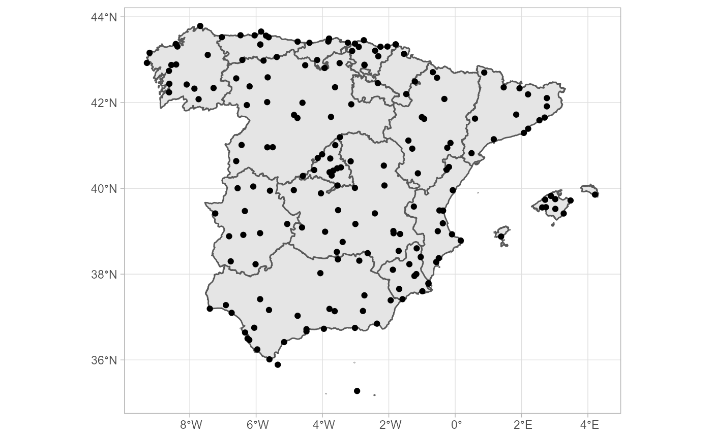
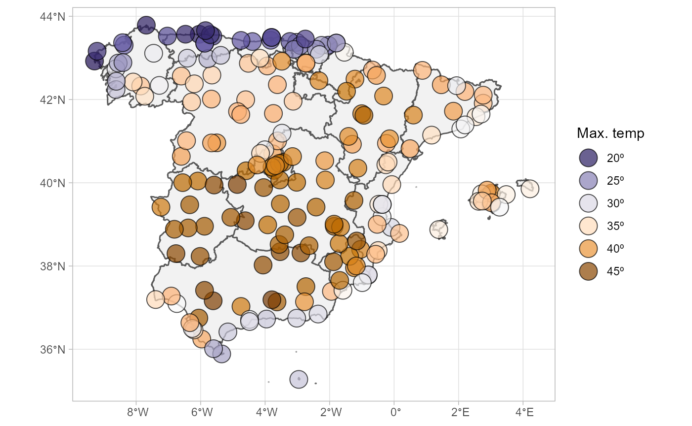
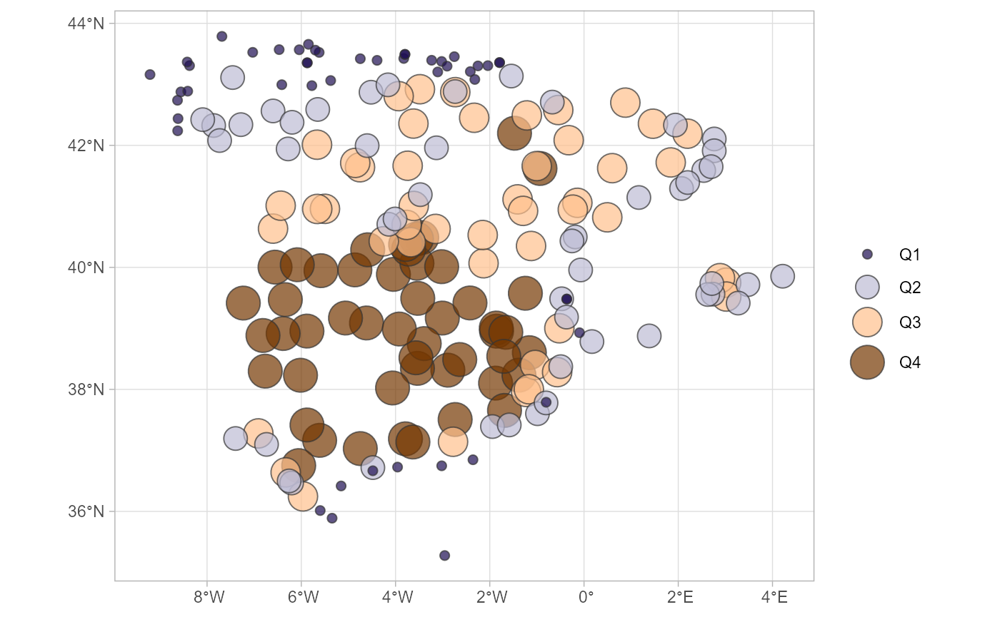
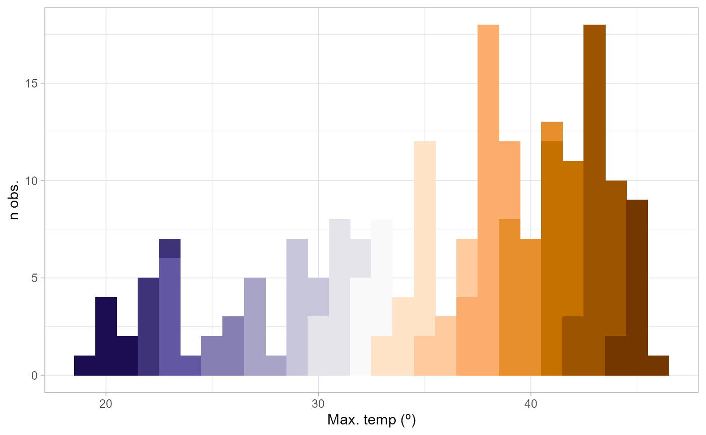
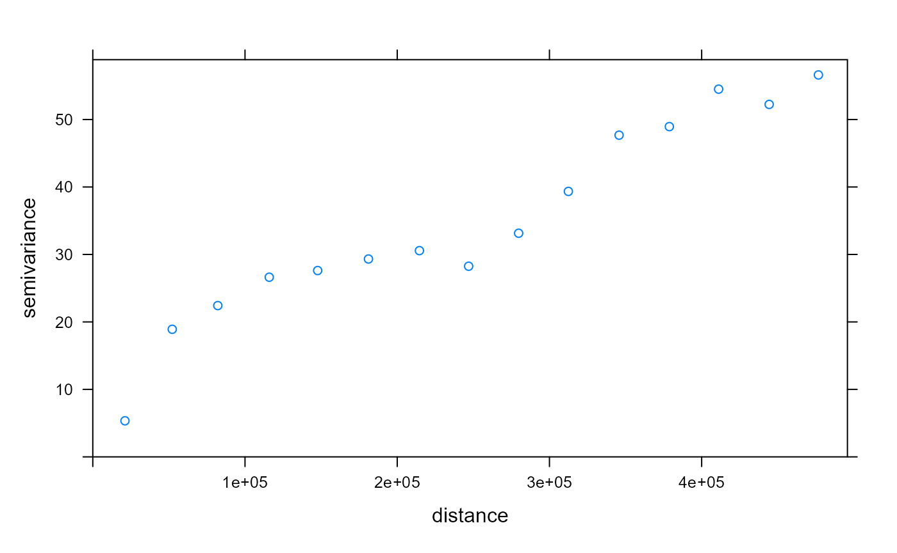
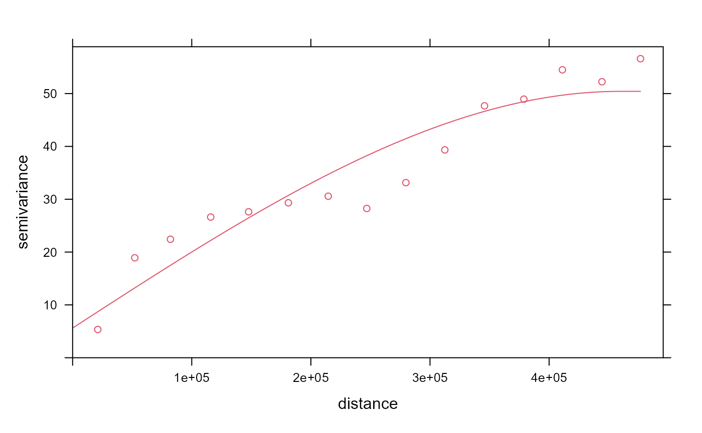
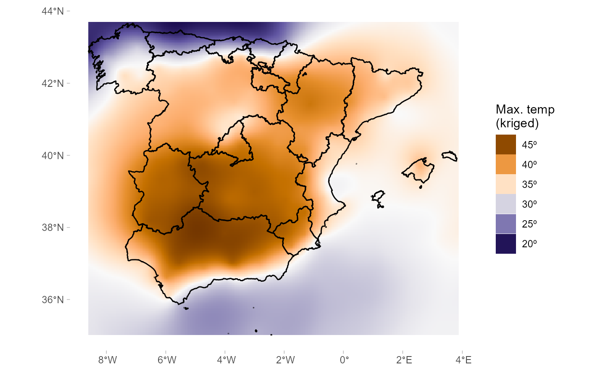
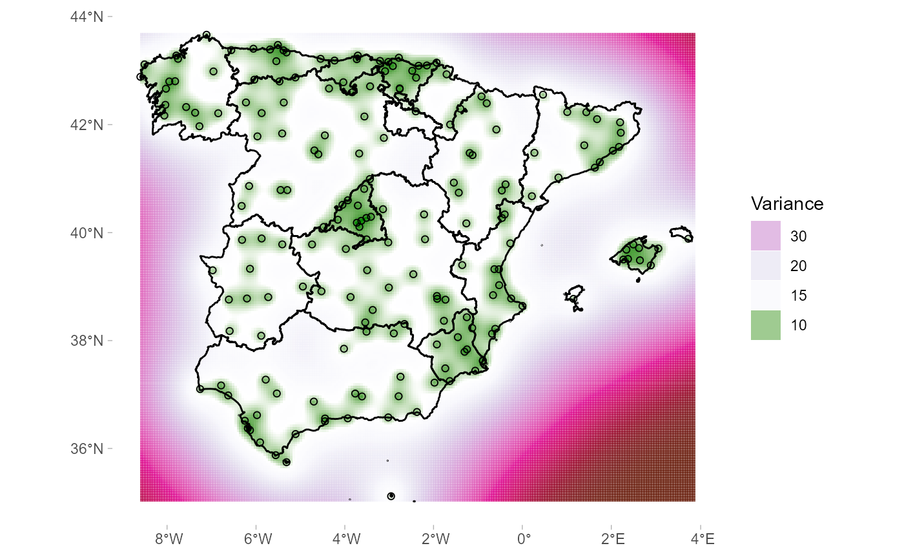
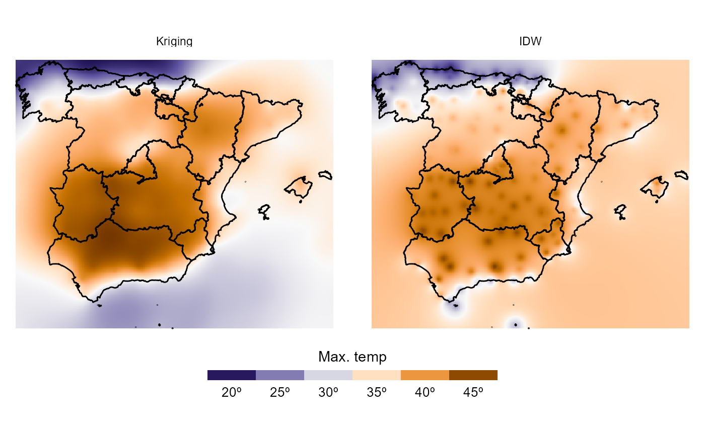

vignettes/articles/dealing_spatial.Rmd
dealing_spatial.RmdGeospatial data is any data that contain information about a specific location on the Earth’s surface. Spatial data arise in a myriad of fields and applications, so there is also a myriad of spatial data types. Cressie (1993) provides a simple and useful classification of spatial data:
See Montero, Fernández-Avilés, & Mateu (2015), for more details.
In this work,we focus on geostatistical data.
Some useful libraries we are going to use on this article:
library(climaemet) # meteorological data
library(mapSpain) # base maps of Spain
library(classInt) # classification
library(raster) # raster handling
library(sf) # spatial shape handling
library(sp) # spatial shape handling
library(gstat) # for spatial interpolation
library(geoR) # for spatial analysis
library(dplyr) # data handling
library(ggplot2) # for plotsIn this paper, we are going to deal with geostatistical data, specifically we are going to model the level of air temperature in Spain on 14 August 2021.
We are going to download the data with climaemet package in R. climaemet allows to download the climatic data of the Spanish Meteorological Agency (AEMET) directly using their API. On this article we would use climaemet (>=1.0.0) (version not released on CRAN yet at the time of writing this article), so it is needed to install the developing version.
You can install the developing version of climaemet using the r-universe:
# Enable this universe
options(repos = c(
ropenspain = "https://ropenspain.r-universe.dev",
CRAN = "https://cloud.r-project.org"
))
install.packages("climaemet")Alternatively, you can install the developing version of climaemet with:
library(remotes)
install_github("ropenspain/climaemet")To be able to download data from AEMET you will need also a free API key which you can get here.
library(climaemet)
# Get api key from AEMET
browseURL("https://opendata.aemet.es/centrodedescargas/obtencionAPIKey")
# Use this function to register your API Key temporarly or permanently
aemet_api_key("<MY API KEY>")Geostatistical data arise when the domain under study is a fixed set \(D\) that is continuous. That is: (i) \(Z(s)\) can be observed at whichever point of the domain (continuous); and (ii) the points in \(D\) are non-stochastic (fixed, \(D\) is the same for all the realizations of the spatial random function).
First, take a look of the characteristics of the stations. We are interesting in latitude and longitude attributes.
stations <- aemet_stations()
# Have a look on the data
stations %>%
dplyr::select(nombre, latitud, longitud) %>%
head() %>%
knitr::kable()| nombre | latitud | longitud |
|---|---|---|
| ARENYS DE MAR | 41.58750 | 2.540000 |
| BARCELONA AEROPUERTO | 41.29278 | 2.070000 |
| BARCELONA, FABRA | 41.41833 | 2.124167 |
| BARCELONA | 41.39056 | 2.200000 |
| MANRESA | 41.72000 | 1.840278 |
| SABADELL AEROPUERTO | 41.52361 | 2.103056 |
Now we can start extracting the data. We select here the daily values on 14 August 2021:
# Select data
date_select <- "2021-08-14"
clim_data <- aemet_daily_clim(
start = date_select,
end = date_select,
return_sf = TRUE
)We can examine the possible variables that can be analyzed. We are interested in maximum daily temperature named tmax, although the API provides also other interesting information:
names(clim_data)
#> [1] "fecha" "indicativo" "nombre" "provincia" "altitud"
#> [6] "tmed" "prec" "tmin" "horatmin" "tmax"
#> [11] "horatmax" "dir" "velmedia" "racha" "horaracha"
#> [16] "sol" "presMax" "horaPresMax" "presMin" "horaPresMin"
#> [21] "geometry"On this step, we select the variable of interest on each station. For simplicity we would remove the Canary Islands on this exercise:
clim_data_clean <- clim_data %>%
# Exclude Islands from analysis
filter(!provincia %in% c(
"LAS PALMAS",
"STA. CRUZ DE TENERIFE"
)) %>%
dplyr::select(fecha, tmax) %>%
# Exclude NAs
filter(!is.na(tmax))
# Plot with outline of Spain
CCAA <- esp_get_ccaa(epsg = 4326) %>%
# Exclude Canary Islands from analysis
filter(ine.ccaa.name != "Canarias")
ggplot(CCAA) +
geom_sf() +
geom_sf(data = clim_data_clean) +
theme_light()
AEMET Stations (excl. Canary Islands)
Let’s plot now the values as a choropleth map:
# This would be common to all the paper
br_paper <- c(-Inf, seq(15, 45, 5), Inf)
pal_paper <- hcl.colors(15, "PuOr", rev = TRUE)
ggplot(clim_data_clean) +
geom_sf(
data = CCAA,
fill = "grey95"
) +
geom_sf(aes(fill = tmax),
shape = 21,
size = 6,
alpha = .7
) +
labs(fill = "Max. temp") +
scale_fill_gradientn(
colours = pal_paper,
breaks = br_paper,
labels = function(x) {
paste0(x, "º")
},
guide = "legend"
) +
theme_light()
Max. temperature 14 Aug. 2021
Everything is related to everything else. But near things are more related than distant things (Tobler, 1969).
In our study, we can observe positive spatial dependence: high values of temperature are all together in the south of Spain and low temperatures are also together in the north of Spain.
clim_data_clean %>%
st_drop_geometry() %>%
select(tmax) %>%
summarise_all(
funs(min, max, median, sd,
n = n(),
q25 = quantile(., .25),
q75 = quantile(., .75)
)
) %>%
knitr::kable()| min | max | median | sd | n | q25 | q75 |
|---|---|---|---|---|---|---|
| 19.2 | 46 | 37.6 | 7.112821 | 195 | 30.85 | 41.55 |
On the next plot we divide the maximum temperature into quartiles to visualize the spatial distribution of values:
bubble <- clim_data_clean %>%
arrange(desc(tmax))
# Create quartiles
cuart <- classIntervals(bubble$tmax, n = 4)
bubble$quart <- cut(bubble$tmax,
breaks = cuart$brks,
labels = FALSE
)
ggplot(bubble) +
geom_sf(
aes(
size = quart,
fill = quart
),
col = "grey20",
alpha = 0.7,
shape = 21
) +
scale_size(
range = c(2, 8),
labels = function(x) paste0("Q", x),
guide = guide_legend()
) +
scale_fill_gradientn(
colours = pal_paper,
labels = function(x) paste0("Q", x)
) +
guides(fill = guide_legend(title = "")) +
labs(
size = ""
) +
theme_light()
Max. temperature - Quartiles
An important thing to consider in any spatial analysis or visualization is the coordinate reference system (CRS). On this exercise, we choose to project our objects to ETRS89 / UTM zone 30N EPSG:25830, that provides projected x and y values on meters and maximizes the accuracy for Spain.
clim_data_utm <- st_transform(clim_data_clean, 25830)
CCAA_utm <- st_transform(CCAA, 25830)As we need to predict values at locations where no measurements have been made, we need to create a grid of locations and perform an interpolation.
This grid is composed to equally spaced points over the whole extent (bounding box) of Spain. Most of the squares does not have any station, hence no observation is available. However, we would use the values of the cells that encloses any station for interpolating the data.
# Create grid 5*5 km (25 km2)
grd_sf <- st_as_sfc(
st_bbox(CCAA_utm)
) %>%
st_make_grid(
cellsize = 5000,
what = "centers"
)
# Convert to sp object - interpolation should be made with sp/raster
grd <- as(grd_sf, "Spatial") %>%
as("SpatialPixels")There are some additional steps we must perform in order to prepare our data for spatial interpolation. We ensure
# Prepare the data. Change to sp for this analysis
clim_data_clean_sp <- as(clim_data_utm, "Spatial")
# Remove duplicate locations
zd <- zerodist(clim_data_clean_sp)
# Remove the duplicate rows and back to sf
clim_data_clean_nodup_sp <- clim_data_clean_sp[-zd[, 2], ]
clim_data_clean_nodup <- st_as_sf(clim_data_clean_nodup_sp)Look the histogram, the data set is Gaussian!! Note that kriging is BLUP.
ggplot(
clim_data_clean_nodup,
aes(x = tmax)
) +
geom_histogram(
aes(fill = cut(tmax, 15)),
binwidth = 1,
show.legend = FALSE
) +
scale_fill_manual(values = pal_paper) +
labs(
y = "n obs.",
x = "Max. temp (º)"
) +
theme_light()
Max. temperature - Histogram
DIEGO: QUITARÍAMOS IDW O LO DEJAMOS PARA COMPARAR…?
LO HE METIDO MAS ADELANTE
GEMA, AQUI YO PONDRIA MAS CHICHA…
library(geoR)
mydata.geo <- clim_data_clean_nodup %>%
st_coordinates() %>%
as.data.frame() %>%
mutate(
lon = X,
lat = Y
) %>%
select(-X, -Y) %>%
bind_cols(tmax = clim_data_clean_nodup$tmax)
mydata <- as.geodata(
obj = mydata.geo,
coords.col = 1:2,
data.col = 3
)The semivariogram function require a more depth study. Now, we show two different functions to fit the empirical semivariogram to a theoretical semivariogram.
GEMA, CAMBIÉ El DIA, PUEDES REVISAR LOS PARAMETROS? NO ME SALE…
vario.b <- variog(mydata, coords = mydata$coords, data = mydata$data)
#> variog: computing omnidirectional variogram
plot(vario.b)
# eyefit() is an interactive function to play with the types and parameters of semivariogram.
# eyefit(vario.b)
# cov.model sigmasq phi tausq kappa kappa2 practicalRange
# spherical 30 826374.98 22.43 <NA> <NA> 826374.98
# Fit the semivariogram by eye in gstat()
vgm <- variogram(tmax ~ 1, clim_data_clean_nodup_sp)
plot(vgm)
fit.var <- fit.variogram(vgm, model = vgm(0, "Sph", 826374.98, 30))
# Plot empirical (dots) and theoretical semivariograms (line)
plot(vgm, fit.var, col = 2)
There are different kinds of kriging depend on the characteristics of the spatial process: simple, ordinary or universal kriging (external drift kriging), kriging in a local neighborhood, point kriging or kriging of block mean values and conditional (Gaussian or indicator) simulation equivalents for all kriging varieties.
In this work we deal with ordinary kriging, the most widely used kriging method. It serves to estimate a value at a point of a region for which a variogram is known, using data in the neighborhood of the estimation location.
kriged <- krige(tmax ~ 1,
clim_data_clean_nodup_sp,
grd,
model = fit.var
)
#> [using ordinary kriging]We now plot the results to see a representation of the results:
kriged_df <- as.data.frame(kriged, xy = TRUE, na.rm = TRUE)
ggplot() +
geom_tile(
data = kriged_df,
aes(
x = coords.x1,
y = coords.x2,
fill = var1.pred
)
) +
geom_sf(
data = CCAA_utm,
col = "black",
fill = NA
) +
scale_fill_gradientn(
colours = pal_paper,
breaks = br_paper,
labels = function(x) {
paste0(x, "º")
},
guide = guide_legend(
reverse = TRUE,
title = "Max. temp\n(kriged)"
)
) +
theme_light() +
theme(
panel.background = element_blank(),
panel.grid = element_blank(),
panel.border = element_blank(),
axis.title = element_blank()
)
Ordinary Kriging - Results
By last, we plot the variance of the estimation:
ggplot() +
geom_tile(
data = kriged_df,
aes(
x = coords.x1,
y = coords.x2,
fill = var1.var
)
) +
geom_sf(
data = CCAA_utm,
col = "black",
fill = NA
) +
geom_sf(
data = clim_data_clean_nodup,
col = "black",
shape = 1
) +
scale_fill_gradientn(
# Special palette
colours = c(
"green4", "white",
hcl.colors(10, "PuRd",
alpha = .7,
rev = TRUE
)
),
breaks = c(-Inf, 6, 10, 15, 20, 30, Inf),
guide = guide_legend(
reverse = TRUE,
title = "Variance"
)
) +
theme_light() +
theme(
panel.background = element_blank(),
panel.grid = element_blank(),
panel.border = element_blank(),
axis.title = element_blank()
)
Ordinary Kriging - Variance
On this section we would compare kriging vs. the Inverse Distance Weighted (IDW) method, that is one of several approaches to perform spatial interpolation. We recommend this article on how to perform these analysis on R.
idw <- idw(tmax ~ 1,
clim_data_clean_nodup_sp,
newdata = grd,
idp = 2.0
)
#> [inverse distance weighted interpolation]
idw_df <- as.data.frame(idw, xy = TRUE, na.rm = TRUE)
# Prepare for facetting
idw_facet <- idw_df %>%
mutate(method = "IDW")
all_methods <- kriged_df %>%
mutate(method = "Kriging") %>%
bind_rows(idw_facet)
# Reorder for facets
all_methods$method <- factor(all_methods$method, levels = c("Kriging", "IDW"))
# Plot and compare
ggplot(all_methods) +
geom_tile(
aes(
x = coords.x1,
y = coords.x2,
fill = var1.pred
)
) +
facet_wrap(vars(method),
ncol = 2
) +
geom_sf(
data = CCAA_utm,
col = "black",
fill = NA
) +
scale_fill_gradientn(
colours = pal_paper,
breaks = br_paper,
labels = function(x) {
paste0(x, "º")
},
guide = guide_legend(
title = "Max. temp",
direction = "horizontal",
keyheight = 0.5,
keywidth = 2.5,
title.position = "top",
title.hjust = 0.5,
label.hjust = .5,
nrow = 1,
byrow = TRUE,
reverse = FALSE,
label.position = "bottom"
)
) +
theme_void() +
theme(
legend.text = element_text(
size = 10
),
legend.title = element_text(
size = 11
),
legend.position = "bottom"
)
Comparison of kriging vs. IDW
Cressie, N. A. C. (1993). Statistics for spatial data. John Wiley & Sons, Ltd. https://doi.org/10.1002/9781119115151
Montero, J., Fernández-Avilés, G., & Mateu, J. (2015). Spatial and spatio-temporal geostatistical modeling and kriging. John Wiley & Sons, Ltd. https://doi.org/10.1002/9781118762387
Tobler, W. R. (1969). Geographical filters and their inverses. Geographical Analysis, 1(3), 234–253. https://doi.org/10.1111/j.1538-4632.1969.tb00621.x
Site built with pkgdown 1.6.1.
Template by Bootstrapious . Ported to pkgdown by dieghernan.